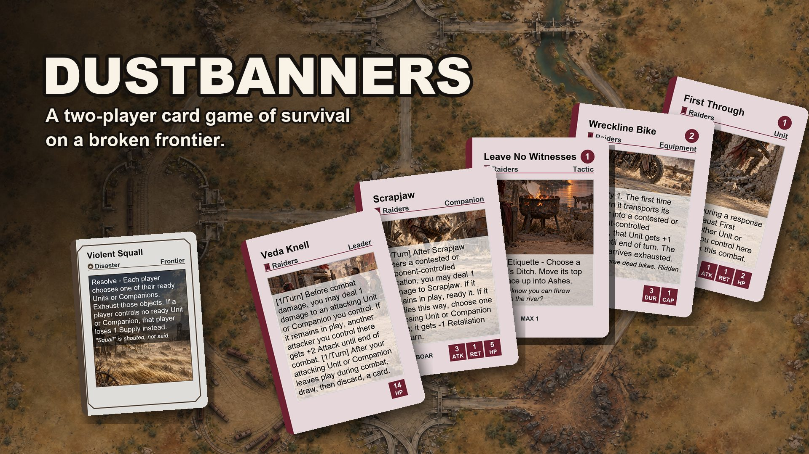

Get one email the day it launches: sign up for news. Want to help test the game? Help playtest.
The game
Dustbanners is a two-player card game of survival on a broken frontier. Each of you leads a faction into a valley of nine places. Plan with your own deck, deal with a shared Frontier Deck of storms, finds and trouble, and win by breaking the enemy Leader or holding most of the nine places.
- 2 players, ages 14 and up.
- The first box has two factions: the Wardens (“How do we protect what’s ours?”) and the Raiders (“What can we take?”). Each banner has two Leaders and two Companions to choose from.
- Two ways to win, and both are always open: break the enemy Leader, or hold most of the 9 places at the end of a turn.
- The Frontier Deck turns up something every turn (a storm, a wild animal, a find) that both of you have to deal with.
- No random packs. Every box has the same cards.
- More factions to come.
A printed test copy is being made, and a print-and-play version is coming.
Help playtest
Dustbanners is still being tested. If you have played it, or want to help us test it, tell us what worked, what confused you and what you would change. Your answers go straight into the next round of fixes.
The form is on Google Forms. We only use your answers to improve the game. Read our privacy notice.
The creator
I’m Kyle. I make games as AminalHungy, a one-person studio in Colorado. I grew up on Sierra adventures, SimCity, Fallout and early Magic: The Gathering.
Dustbanners began on a hike in Boulder: my friend Ross and I climbed a trail, and the next morning I woke up wanting to build the world I had seen from near the top. It is a two-player card game for people who like to plan with a deck and then get surprised by one they can only guess.
AI and art
I use AI tools to help make Dustbanners. The world, the rules and every final decision are mine. AI tools helped build and test the digital version of the game, run its balance simulations, and draft some of the text, which I edit and approve. A paid human editor will do the final pass on every word players see. All card art shown before launch is AI-made placeholder art, and it is labeled as placeholder everywhere it appears. The final card and box art will be made by paid human artists. The card backs and the logo were also made with AI tools for now, and a human artist will redraw them. No AI art will be in the printed game.
Get email news
Sign up and we will email you Dustbanners news: the day the Kickstarter launches, when the print-and-play is ready, and news from playtests and the world of the game. We only send news, and we never sell your email.
You will get one email first to confirm. Every email has an unsubscribe link at the bottom: one click and you are off the list. Read our privacy notice.